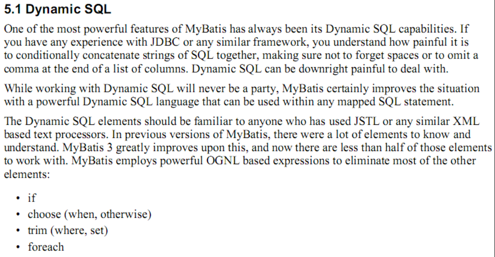
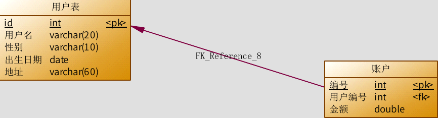
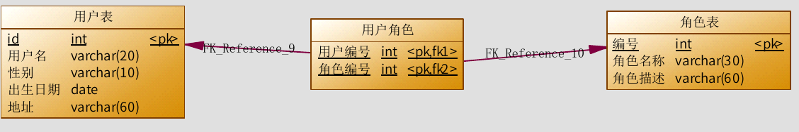

Mybatis 的映射文件中,有些时候业务逻辑复杂时,我们就需要用到动态sql语句结合多表查询的技巧。
Mybatis 的动态 SQL 语句
Mybatis 的映射文件中,前面我们的 SQL 都是比较简单的,有些时候业务逻辑复杂时,我们的 SQL 是动态变化的,此时在前面的学习中我们的 SQL 就不能满足要求了。
参考的官方文档,描述如下:

动态 SQL 之<if>标签
我们根据实体类的不同取值,使用不同的 SQL 语句来进行查询。比如在 id 如果不为空时可以根据 id 查询,如果 username 不同空时还要加入用户名作为条件。这种情况在我们的多条件组合查询中经常会碰到。
持久层 Dao 接口
/**
* 根据用户信息,查询用户列表
* @param user
* @return
*/
List<User> findByUser(User user);
持久层 Dao 映射配置
<select id="findByUser" resultType="user" parameterType="user">
select * from user where 1=1
<if test="username!=null and username != '' ">
and username like #{username}
</if>
<if test="address != null">
and address like #{address}
</if>
</select>
注意:<if>标签的 test 属性中写的是对象的属性名,如果是包装类的对象要使用 OGNL 表达式的写法。
另外要注意 where 1=1 的作用~!
测试
@Test
public void testFindByUser() {
User u = new User();
u.setUsername("%王%");
u.setAddress("%顺义%");
//6.执行操作
List<User> users = userDao.findByUser(u);
for(User user : users) {
System.out.println(user);
}
}
动态 SQL 之<where>标签
为了简化上面 where 1=1 的条件拼装,我们可以采用<where>标签来简化开发。
持久层 Dao 映射配置
<sql id="defaultSql">
select * from user;
</sql>
<!-- 根据用户信息查询 -->
<select id="findByUser" resultType="user" parameterType="user">
<include refid="defaultSql"></include>
<where>
<if test="username!=null and username != '' ">
and username like #{username}
</if>
<if test="address != null">
and address like #{address}
</if>
</where>
</select>
动态标签之<foreach>标签
需求
传入多个 id 查询用户信息,用下边两个 sql 实现:SELECT * FROM USERS WHERE username LIKE '%张%' AND (id =10 OR id =89 OR id=16)SELECT * FROM USERS WHERE username LIKE '%张%' AND id IN (10,89,16)
这样我们在进行范围查询时,就要将一个集合中的值,作为参数动态添加进来。
这样我们将如何进行参数的传递?
POJO
在 QueryVo 中加入一个 List 集合用于封装参数
/**
*
* <p>Title: QueryVo</p>
* <p>Description: 查询的条件</p>
*/
public class QueryVo implements Serializable {
private List<Integer> ids;
public List<Integer> getIds() {
return ids;
}
public void setIds(List<Integer> ids) {
this.ids = ids;
}
}
持久层 Dao 接口
/**
* 根据 id 集合查询用户
* @param vo
* @return
*/
List<User> findInIds(QueryVo vo);
持久层 Dao 映射配置
<!-- 查询所有用户在 id 的集合之中 -->
<select id="findInIds" resultType="user" parameterType="queryvo">
<!--
select * from user where id in (1,2,3,4,5); -->
<include refid="defaultSql"></include>
<where>
<if test="ids != null and ids.size() > 0">
<foreach collection="ids" open="id in(" close=")" item="uid" separator=",">
#{uid}
</foreach>
</if>
</where>
</select>
<foreach>标签用于遍历集合,它的属性:
- collection:代表要遍历的集合元素,注意编写时不要写#{}
- open:代表语句的开始部分
- close:代表结束部分
- item:代表遍历集合的每个元素,生成的变量名
- sperator:代表分隔符
测试方法
@Test
public void testFindInIds() {
QueryVo vo = new QueryVo();
List<Integer> ids = new ArrayList<Integer>();
ids.add(41);
ids.add(42);
ids.add(43);
ids.add(46);
ids.add(57);
vo.setIds(ids);
//6.执行操作
List<User> users = userDao.findInIds(vo);
for(User user : users) {
System.out.println(user);
}
}
Mybatis 中简化编写的 SQL 片段
Sql 中可将重复的 sql 提取出来,使用时用 include 引用即可,最终达到 sql重用的目的。
定义代码片段
<!-- 抽取重复的语句代码片段 -->
<sql id="defaultSql">
select * from user
</sql>
引用代码片段
<!-- 配置查询所有操作 -->
<select id="findAll" resultType="user">
<include refid="defaultSql"></include>
</select>
<!-- 根据 id 查询 -->
<select id="findById" resultType="UsEr" parameterType="int">
<include refid="defaultSql"></include>
where id = #{uid}
</select>
Mybatis 多表查询之一对多
本次案例主要以最为简单的用户和账户的模型来分析 Mybatis 多表关系。用户为 User表,账户为 Account表。一个用户(User)可以有多个账户(Account)。具体关系如下:

一对一查询(多对一)
需求:
查询所有账户信息,关联查询下单用户信息。
注意:
因为一个账户信息只能供某个用户使用,所以从查询账户信息出发关联查询用户信息为一对一查询。如果从用户信息出发查询用户下的账户信息则为一对多查询,因为一个用户可以有多个账户。
方式一：使用pojo
实体类：
/**
*
* <p>Title: Account</p>
* <p>Description: 账户的实体类</p>
*/
public class Account implements Serializable {
private Integer id;
private Integer uid;
private Double money;
public Integer getId() {
return id;
}
public void setId(Integer id) {
this.id = id;
}
public Integer getUid() {
return uid;
}
public void setUid(Integer uid) {
this.uid = uid;
}
public Double getMoney() {
return money;
}
public void setMoney(Double money) {
this.money = money;
}
@Override
public String toString() {
return "Account [id=" + id + ", uid=" + uid + ", money=" + money + "]";
}
}
Sql 语句：
实现查询账户信息时,也要查询账户所对应的用户信息。
SELECT
account.*,
user.username,
user.address
FROM
account,
user
WHERE account.uid = user.id
定义 AccountUser 类：
为了能够封装上面 SQL 语句的查询结果,定义 AccountCustomer 类中要包含账户信息同时还要包含用户信息,所以我们要在定义 AccountUser 类时可以继承 User 类。
/**
*
* <p>Title: AccountUser</p>
* <p>Description: 它是 account 的子类</p>
*/
public class AccountUser extends Account implements Serializable {
private String username;
private String address;
public String getUsername() {
return username;
}
public void setUsername(String username) {
this.username = username;
}
public String getAddress() {
return address;
}
public void setAddress(String address) {
this.address = address;
}
@Override
public String toString() {
return super.toString() + "
AccountUser [username=" + username + ",
address=" + address + "]";
}
}
定义账户的持久层 Dao 接口：
/**
*
* <p>Title: IAccountDao</p>
* <p>Description: 账户的持久层接口</p>
*/
public interface IAccountDao {
/**
* 查询所有账户,同时获取账户的所属用户名称以及它的地址信息
* @return
*/
List<AccountUser> findAll();
}
定义 AccountDao.xml 文件中的查询配置信息：
<?xml version="1.0" encoding="UTF-8"?>
<!DOCTYPE mapper
PUBLIC "-//mybatis.org//DTD Mapper 3.0//EN"
"http://mybatis.org/dtd/mybatis-3-mapper.dtd">
<mapper namespace="uestc.zhangkx.dao.IAccountDao">
<!-- 配置查询所有操作-->
<select id="findAll" resultType="accountuser">
select a.*,u.username,u.address from account a,user u where a.uid =u.id;
</select>
</mapper>
注意:因为上面查询的结果中包含了账户信息同时还包含了用户信息,所以我们的返回值类型 returnType的值设置为AccountUser类型,这样就可以接收账户信息和用户信息了。
创建 AccountTest 测试类：
/**
*
* <p>Title: MybastisCRUDTest</p>
* <p>Description: 一对多账户的操作</p>
*/
public class AccountTest {
private InputStream in ;
private SqlSessionFactory factory;
private SqlSession session;
private IAccountDao accountDao;
@Test
public void testFindAll() {
//6.执行操作
List<AccountUser> accountusers = accountDao.findAll();
for(AccountUser au : accountusers) {
System.out.println(au);
}
}
@Before//在测试方法执行之前执行
public void init()throws Exception {
//1.读取配置文件
in = Resources.getResourceAsStream("SqlMapConfig.xml");
//2.创建构建者对象
SqlSessionFactoryBuilder builder = new SqlSessionFactoryBuilder();
//3.创建 SqlSession 工厂对象
factory = builder.build(in);
//4.创建 SqlSession 对象
session = factory.openSession();
//5.创建 Dao 的代理对象
accountDao = session.getMapper(IAccountDao.class);
}
@After//在测试方法执行完成之后执行
public void destroy() throws Exception{
session.commit();
//7.释放资源
session.close();
in.close();
}
}
小结:
定义专门的 po 类作为输出类型,其中定义了 sql 查询结果集所有的字段。此方法较为简单,企业中使用普遍。
方式二
使用 resultMap,定义专门的 resultMap 用于映射一对一查询结果。
通过面向对象的(has a)关系可以得知,我们可以在 Account 类中加入一个 User 类的对象来代表这个账户是哪个用户的。
修改 Account 类：
/**
*
* <p>Title: Account</p>
* <p>Description: 账户的实体类</p>
*/
public class Account implements Serializable {
private Integer id;
private Integer uid;
private Double money;
private User user;
public User getUser() {
return user;
}
public void setUser(User user) {
this.user = user;
}
public Integer getId() {
return id;
}
public void setId(Integer id) {
this.id = id;
}
public Integer getUid() {
return uid;
}
public void setUid(Integer uid) {
this.uid = uid;
}
public Double getMoney() {
return money;
}
public void setMoney(Double money) {
this.money = money;
}
@Override
public String toString() {
return "Account [id=" + id + ", uid=" + uid + ", money=" + money + "]";
}
}
修改 AccountDao 接口中的方法:
/**
*
* <p>Title: IAccountDao</p>
* <p>Description: 账户的持久层接口</p>
*/
public interface IAccountDao {
/**
* 查询所有账户,同时获取账户的所属用户名称以及它的地址信息
* @return
*/
List<Account> findAll();
}
注意:第二种方式,将返回值改 为了 Account 类型。
因为 Account 类中包含了一个 User 类的对象,它可以封装账户所对应的用户信息。
重新定义 AccountDao.xml 文件:
<?xml version="1.0" encoding="UTF-8"?>
<!DOCTYPE mapper
PUBLIC "-//mybatis.org//DTD Mapper 3.0//EN"
"http://mybatis.org/dtd/mybatis-3-mapper.dtd">
<mapper namespace="uestc.zhangkx.dao.IAccountDao">
<!-- 建立对应关系 -->
<resultMap type="account" id="accountMap">
<id column="aid" property="id"/>
<result column="uid" property="uid"/>
<result column="money" property="money"/>
<!-- 它是用于指定从表方的引用实体属性的 -->
<association property="user" javaType="user">
<id column="id" property="id"/>
<result column="username" property="username"/>
<result column="sex" property="sex"/>
<result column="birthday" property="birthday"/>
<result column="address" property="address"/>
</association>
</resultMap>
<select id="findAll" resultMap="accountMap">
select u.*,a.id as aid,a.uid,a.money from account a,user u where a.uid =u.id;
</select>
</mapper>
在 AccountTest 类中加入测试方法:
@Test
public void testFindAll()
{
List<Account> accounts = accountDao.findAll();
for(Account au : accounts) {
System.out.println(au);
System.out.println(au.getUser());
}
}
一对多查询
需求:
查询所有用户信息及用户关联的账户信息。
分析:
用户信息和他的账户信息为一对多关系,并且查询过程中如果用户没有账户信息,此时也要将用户信息查询出来,我们想到了左外连接查询比较合适。
编写 SQL 语句:
SELECT
u.*, acc.id id,
acc.uid,
acc.money
FROM
user u
LEFT JOIN account acc ON u.id = acc.uid
User 类加入 List<Account>
/**
*
* <p>Title: User</p>
* <p>Description: 用户的实体类</p>
*/
public class User implements Serializable {
private Integer id;
private String username;
private Date birthday;
private String sex;
private String address;
private List<Account> accounts;
public List<Account> getAccounts() {
return accounts;
}
public void setAccounts(List<Account> accounts) {
this.accounts = accounts;
}
public Integer getId() {
return id;
}
public void setId(Integer id) {
this.id = id;
}
public String getUsername() {
return username;
}
public void setUsername(String username) {
this.username = username;
}
public Date getBirthday() {
return birthday;
}
public void setBirthday(Date birthday) {
this.birthday = birthday;
}
public String getSex() {
return sex;
}
public void setSex(String sex) {
this.sex = sex;
}
public String getAddress() {
return address;
}
public void setAddress(String address) {
this.address = address;
}
@Override
public String toString() {
return "User [id=" + id + ", username=" + username + ", birthday=" + birthday
+ ", sex=" + sex + ", address="
+ address + "]";
}
}
用户持久层 Dao 接口中加入查询方法
/**
* 查询所有用户,同时获取出每个用户下的所有账户信息
* @return
*/
List<User> findAll();
用户持久层 Dao 映射文件配置
<?xml version="1.0" encoding="UTF-8"?>
<!DOCTYPE mapper
PUBLIC "-//mybatis.org//DTD Mapper 3.0//EN"
"http://mybatis.org/dtd/mybatis-3-mapper.dtd">
<mapper namespace="uestc.zhangkx.dao.IUserDao">
<resultMap type="user" id="userMap">
<id column="id" property="id"></id>
<result column="username" property="username"/>
<result column="address" property="address"/>
<result column="sex" property="sex"/>
<result column="birthday" property="birthday"/>
<!-- collection 是用于建立一对多中集合属性的对应关系
ofType 用于指定集合元素的数据类型-->
<collection property="accounts" ofType="account">
<id column="aid" property="id"/>
<result column="uid" property="uid"/>
<result column="money" property="money"/>
</collection>
</resultMap>
<!-- 配置查询所有操作 -->
<select id="findAll" resultMap="userMap">
select u.*,a.id as aid ,a.uid,a.money from user u left outer join account
a on u.id =a.uid
</select>
</mapper>
collection
部分定义了用户关联的账户信息。表示关联查询结果集
property=”accList”:
关联查询的结果集存储在 User 对象的上哪个属性。
ofType=”account”:
指定关联查询的结果集中的对象类型即 List 中的对象类型。此处可以使用别名,也可以使用全限定名。
测试方法
/**
*
* <p>Title: MybastisCRUDTest</p>
* <p>Description: 一对多的操作</p>
* <p>Company: http://www.itheima.com/ </p>
*/
public class UserTest {
private InputStream in ;
private SqlSessionFactory factory;
private SqlSession session;
private IUserDao userDao;
@Test
public void testFindAll() {
//6.执行操作
List<User> users = userDao.findAll();
for(User user : users) {
System.out.println("-------每个用户的内容---------");
System.out.println(user);
System.out.println(user.getAccounts());
}
}
@Before//在测试方法执行之前执行
public void init()throws Exception {
//1.读取配置文件
in = Resources.getResourceAsStream("SqlMapConfig.xml");
//2.创建构建者对象
SqlSessionFactoryBuilder builder = new SqlSessionFactoryBuilder();
//3.创建 SqlSession 工厂对象
factory = builder.build(in);
//4.创建 SqlSession 对象
session = factory.openSession();
//5.创建 Dao 的代理对象
userDao = session.getMapper(IUserDao.class);
}
@After//在测试方法执行完成之后执行
public void destroy() throws Exception{
session.commit();
//7.释放资源
session.close();
in.close();
}
}
Mybatis 多表查询之多对多
实现 Role 到 User 多对多
通过前面的学习,我们使用 Mybatis 实现一对多关系的维护。多对多关系其实我们看成是双向的一对多关系。
用户与角色的多对多关系模型如下:

业务要求及实现 SQL
需求:
实现查询所有对象并且加载它所分配的用户信息。
分析:
查询角色我们需要用到 Role 表,但角色分配的用户的信息我们并不能直接找到用户信息,而是要通过中间表(USER_ROLE 表)才能关联到用户信息。
下面是实现的 SQL 语句:
SELECT
r.*,u.id uid,
u.username username,
u.birthday birthday,
u.sex sex,
u.address address
FROM
ROLE r
INNER JOIN
USER_ROLE ur
ON ( r.id = ur.rid)
INNER JOIN
USER u
ON (ur.uid = u.id);
编写角色实体类
public class Role implements Serializable {
private Integer roleId;
private String roleName;
private String roleDesc;
//多对多的关系映射:一个角色可以赋予多个用户
private List<User> users;
public List<User> getUsers() {
return users;
}
public void setUsers(List<User> users) {
this.users = users;
}
public Integer getRoleId() {
return roleId;
}
public void setRoleId(Integer roleId) {
this.roleId = roleId;
}
public String getRoleName() {
return roleName;
}
public void setRoleName(String roleName) {
this.roleName = roleName;
}
public String getRoleDesc() {
return roleDesc;
}
public void setRoleDesc(String roleDesc) {
this.roleDesc = roleDesc;
}
@Override
public String toString() {
return "Role{" +
"roleId=" + roleId +
", roleName='" + roleName + '\'' +
", roleDesc='" + roleDesc + '\'' +
'}';
}
}
编写 Role 持久层接口
public interface IRoleDao {
/**
* 查询所有角色
* @return
*/
List<Role> findAll();
}
编写映射文件
<?xml version="1.0" encoding="UTF-8"?>
<!DOCTYPE mapper
PUBLIC "-//mybatis.org//DTD Mapper 3.0//EN"
"http://mybatis.org/dtd/mybatis-3-mapper.dtd">
<mapper namespace="uestc.zhangkx.dao.IRoleDao">
<!--定义 role 表的 ResultMap-->
<resultMap id="roleMap" type="role">
<id property="roleId" column="rid"></id>
<result property="roleName" column="role_name"></result>
<result property="roleDesc" column="role_desc"></result>
<collection property="users" ofType="user">
<id column="id" property="id"></id>
<result column="username" property="username"></result>
<result column="address" property="address"></result>
<result column="sex" property="sex"></result>
<result column="birthday" property="birthday"></result>
</collection>
</resultMap>
<!--查询所有-->
<select id="findAll" resultMap="roleMap">
select u.*,r.id as rid,r.role_name,r.role_desc from role r
left outer join user_role ur
on r.id = ur.rid
left outer join user u on u.id = ur.uid
</select>
</mapper>
编写测试类
public class RoleTest {
private InputStream in;
private SqlSession sqlSession;
private IRoleDao roleDao;
@Before//用于在测试方法执行之前执行
public void init()throws Exception{
//1.读取配置文件,生成字节输入流
in = Resources.getResourceAsStream("SqlMapConfig.xml");
//2.获取 SqlSessionFactory
SqlSessionFactory factory = new SqlSessionFactoryBuilder().build(in);
//3.获取 SqlSession 对象
sqlSession = factory.openSession(true);
//4.获取 dao 的代理对象
roleDao = sqlSession.getMapper(IRoleDao.class);
}
@After//用于在测试方法执行之后执行
public void destroy()throws Exception{
//提交事务
// sqlSession.commit();
//6.释放资源
sqlSession.close();
in.close();
}
/**
* 测试查询所有
*/
@Test
public void testFindAll(){
List<Role> roles = roleDao.findAll();
for(Role role : roles){
System.out.println("---每个角色的信息----");
System.out.println(role);
System.out.println(role.getUsers());
}
}
}